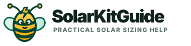

The goal is not to turn SolarKitGuide into a cartoon brand. The strongest direction is a cleaner, more credible logo with Wattson the solar bee used sparingly as a friendly helper in empty states, beginner callouts, and maybe future calculator tips.
My recommendation
Use Option A as the serious brand logo and keep the bee as a supporting illustration. That gives the site more polish for affiliate approvals while still softening the beginner experience.
Recommended pairing
Clean solar mark + Wattson as guide
The logo stays professional. The bee appears in beginner-focused places: “New to solar?” callouts, calculator tips, equipment explainers, and maybe a lightweight error/empty state.
Option A — Polished planning brand
The safest upgrade: cleaner badge, stronger wordmark, and a small tagline. It feels more credible for affiliate applications and still matches the existing site.

Option B — Bee in the logo
Friendly and memorable, but riskier. I would avoid making the bee the main logo unless we want a more playful brand from the start.
Option C — Premium badge
A more app-like badge. Professional and compact, though slightly less warm than the polished planning logo.
Wattson mascot direction
A bumblebee works because bees naturally connect to sunshine, energy, helpfulness, and “busy little guide” energy. The solar-panel wings and lightning detail make it specific to SolarKitGuide instead of generic.
Where the mascot could appear later
Beginner callout: “New to solar? Wattson recommends starting with the basics.”
Calculator tips: short helper notes beside confusing terms like surge watts or usable battery capacity.
Equipment page: small side illustration near “match the equipment to the job.”
Not in every header: keep the top nav and main logo professional.